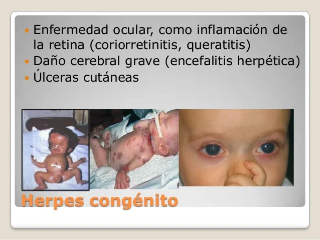
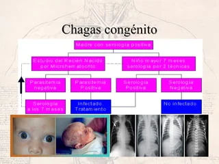
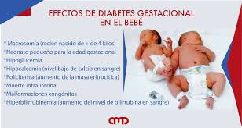

Tp Final
Sífilis
Zika
Viruela
Herpes

Chagas

Diabetes
La idea no es hacer un estudio profundo sobre la diabetes, que es un tema que lo van a ver el años que viene. Es para ver como afecta a los bebés durante el embarazo.

La idea no es hacer un estudio profundo sobre la diabetes, que es un tema que lo van a ver el años que viene. Es para ver como afecta a los bebés durante el embarazo.